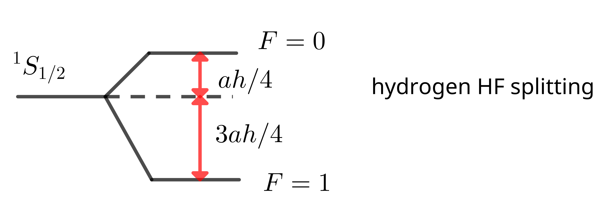

Atomic and Optical Physics I, 08 Atoms IV: Hyperfine Structure (updage 17/Nov/2022)
Information
- 官方介绍: https://ocw.mit.edu/courses/physics/8-421-atomic-and-optical-physics-i-spring-2014/
- 视频列表地址: https://www.youtube.com/playlist?list=PLUl4u3cNGP62FPGcyFJkzhqq9c5cHCK32
Lamb Shift
Two contribution:
- Coulomb potential is "smeared out", so a weaker binding energy.
- Futher contribution to the Lamb shift. 27 MHz, 3% : vaccum polarization. We observe the shielded charge. $\Rightarrow$ s(l = 0) electron sees a higher charge(s 电子 穿透到里面) $\Rightarrow$ down shift for $2S_{1/2}$ 27MHz.
Introduction: Effect of Nucleus (Hyperfine Structure)
So far: point charge
Now: nucleus has structure
mangnetic moment: dipole or quadrapole $\Rightarrow$ HFS.
mass and volume $\Rightarrow$ Isotope shifts
Relevance of hpyerfine structure:
- several ground states (optical pumping, manuplation of atoms)
- astronomical observation 21cm line
- determination of nuclear properties(even of unstable nuclei)
HFS
the most important effect due to the hyperfine structure: the nucleolus has a magnetic moment, and this magnetic moment couples to the magnetic field, even if you don't apply an external magnetic field.
$$\begin{align} H_{\mathrm{HF}} = - \vec{B}_J(0)\cdot \vec{\mu}_{I} \end{align}$$this is the Zeeman Hamiltonian of the nucleus in the magnetic field created by the electron.
Alternatively: $e^-$ moves in the potential of the nucleus \begin{align} V = - \frac{e^2}{r} , \vec{A} = \frac{\vec{\mu}_I\times \mathrm{r}}{r^3} \quad \mathrm{Jackson(5.55)} \end{align} then solve the Schrodinger Eq.
Semi classical derivation of $\vec{B}_{J}$
orbital and spin part:
$$\begin{align} \vec{B}_J = \vec{B}_L + \vec{B}_S \end{align}$$Jackson (5.64):
$$\begin{align} \vec{B}_S = \frac{1}{r^3}[-\vec{\mu} + 3(\vec{\mu}\cdot \hat{r})\hat{r}] + \frac{8\pi}{3}\delta(\vec{r}) \vec{\mu} \end{align}$$where $\vec{\mu} = g\mu_B\vec{S}$. Biot and Savart:
$$\begin{align} \vec{B}_L(0) = \frac{1}{c}\int \vec{I} \frac{\mathrm{d}\vec{r}\times \vec{r}}{r^3} \rightarrow \frac{e}{c} \int \rho (\vec{r}) \frac{\vec{v}\times \vec{r}}{r^3} = - \frac{e}{mc}\vec{L} \langle \frac{1}{r^3} \rangle = - 2\mu_B \vec{L} \langle \frac{1}{r^3} \rangle \end{align}$$total $\vec{B}$ field (using $g= -2$ for electron spin)
$$\begin{align} \vec{B}_J = -2\mu_B \left( \frac{\vec{L}}{r^3} - \frac{\vec{S}}{r^3} + \frac{3(\vec{S}\cdot \hat{r})\hat{r}}{r^{3}} + \frac{8}{3}\pi \delta(\vec{r})\vec{S} \right) \end{align}$$the first three terms is $0$ for $L = 0$ because of spherical average, the last term is $0$ for $L\neq 0$ .
$$\begin{align} H_{HF} = - \vec{B}_J \vec{\mu}_I = a h \vec{I} \cdot \vec{J} \end{align}$$For $L = 0$ , $\langle \vec{J} \cdot \vec{B}_J = - 4\pi \mu_B |\psi_{s}|^2$
$$\begin{align} a h = \frac{g_I \mu_N \mu_B 4\pi |\psi(0)|^2}{S(S + 1)} , \quad \vec{\mu}_I = g_I \mu_N \vec{I} \end{align}$$For hydrogen: 1420MHz
$$\begin{align} H = a h \vec{I}\cdot\vec{J} = \frac{a h}{2} (F(F + 1) - I(I + 1) - J(J + 1)) \end{align}$$$I = J = S = 1/2$, $F = 1, 0$

center of mass of HF states is not change.
Quadrapole moments
What further (electric or magnetic) moments can a nucleus have?
parity of electric multiple: $( - 1)^l$ parity parity of magnetic multiple: $( - 1)^{ l + 1}$ parity
Minimum I for magnetic dipole and electric quadrapole
for magnetic dipole is $I\ge 1/2$ ： 分清两个方向, 只需要翻个个就行
for electric quadrapole is $I \ge 1$ ： 分清一个椭球还是一个球, 需要有一个反转 90 度的操作
Formal
Isotopic effects
Mass
$$\begin{align} E_n = E_n^{\infty} (\frac{M}{M + m}) \end{align}$$$M$ : nucleus mass. $m$ : electron mass
Volumn
Coulomb level shits. only $s$ electron
weakens the binding energies
Volum effect: Largest for heavy nuclei
Mass effect: Largest for hightest nuclei
Reference
- wikipedia: Lamb shift
- wikipedia: Fine structure
- Jackson, J. D. Classical electrodynamics. (Wiley, 1999)